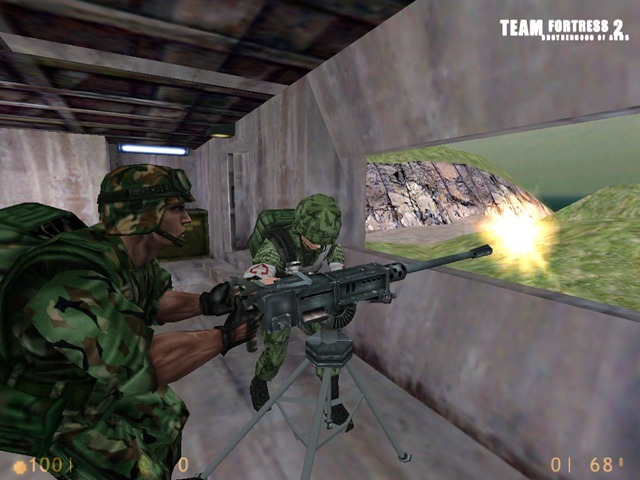
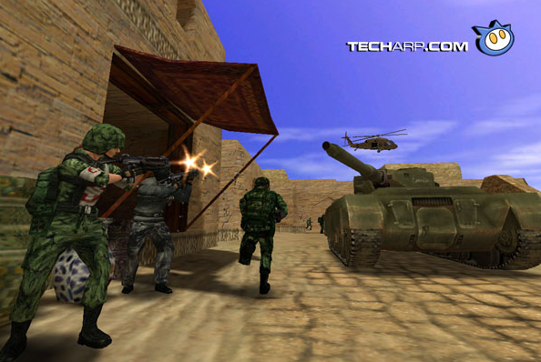
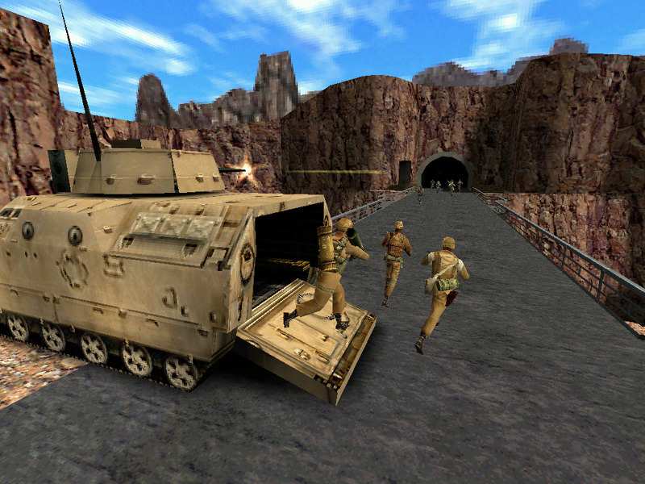
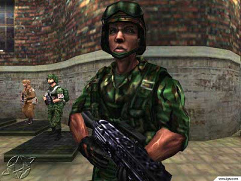
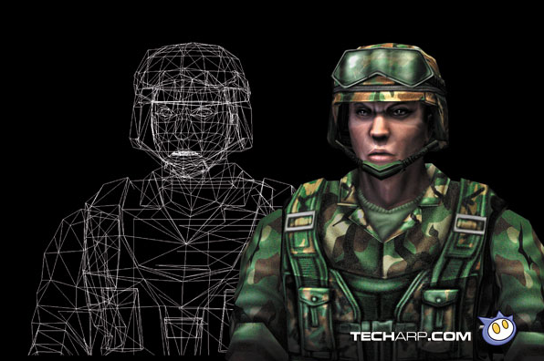
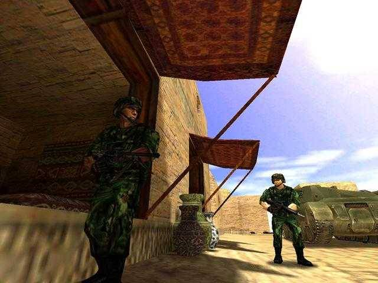

Team Fortress 2: Brotherhood of Arms in 1999.
Valve originally went for a militaristic design, making this version of the game look more like a Counter-Strike with military character models instead of the fun, heavily stylized TF2 of today.
Valve was pushing the GoldSrc engine here with higher-polygon characters and environments, parametric animation and dynamic LOD. All of that was eventually scrapped with the move to the Source engine in the early 2000’s.
There is also some pretty low-fi footage German magazine GameStar shot off a CRT monitor back in 1998, which is the only footage of this version of the game I’m aware of.